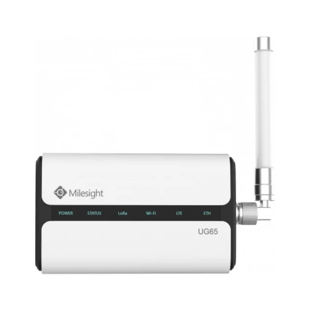

AMR & BILLING
Smart water metering
Bring flat-wise or zone-wise water readings into one place. Automatic meter reading helps societies understand consumption and prepare bills with fewer manual reading visits.


Monitoring · reports · billing
Installation & integration
- Choose meters around pipe size, expected flow, installation space and the location of each connection.
- Plan compatible reading modules, gateways and communication coverage for automatic meter reading (AMR).
- Map meter IDs to flats or zones and configure reading reports and supported billing exports.
What it helps you do
- Make individual water use visible to residents and facility teams.
- Compare recorded usage across periods to investigate unexpected changes.
- Use timestamped readings to support clearer allocation and billing.
SYSTEM VISIBILITY
Water consumption overview
Review connection-wise water use and prepare consumption reports.
Illustrative interface, not live site data. Actual screens and features depend on the selected equipment, software and project scope.
Operator checklist
Residential connections
Common-area consumption
Missing reading review
HOW IT WORKS
From requirement to operation.
- 01
Record volume
Each meter measures the water passing through its connection.
- 02
Collect readings
The compatible reading module sends data to a gateway or collection network.
- 03
Review usage
Software organises readings for consumption reports and the agreed billing process.
Questions about smart water metering
Can the system detect leaks?
Supported platforms can flag continuous flow or unusual consumption for investigation. Alerts depend on meter resolution, reporting frequency and configuration; a usage alert does not locate a leak.
Will the existing pipework need changes?
Meter size, accessibility and available straight pipe lengths must be reviewed against the selected manufacturer's installation requirements.
PLAN YOUR INSTALLATION
Help us prepare a relevant proposal.
Number of connections, pipe sizes, meter locations, existing meter details and billing requirements.
Already have a system? Explore AMC coverage and ongoing support.